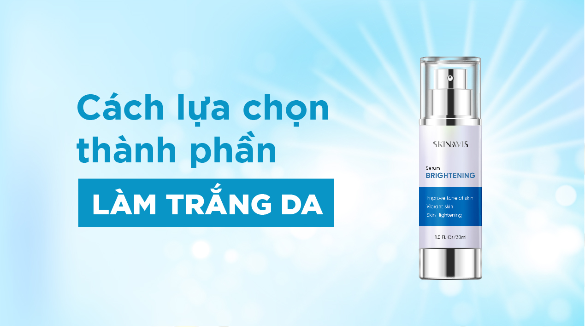

Chọn hoạt chất dưỡng trắng da thế nào cho an toàn và hiệu quả

“Nên chọn những loại mỹ phẩm có thành phần như thế nào để làm trắng da lành tính mà vẫn hiệu quả” là nỗi băn khoăn của rất nhiều chị em. Vì vậy Skinavis Việt Nam sẽ giới thiệu cho các bạn 5 loại hoạt chất phổ biến là an toàn và hiệu quả nhất để chị em có thể lựa chọn cho mình giải pháp làm trắng da phù hợp nhé!
1. Arbutin
Arbutin được chiết xuất từ quả Bearberry. Đây là chất được sử dụng rộng rãi trong các dòng dưỡng trắng da của Nhật Bản và Hàn Quốc…điển hình là Shiseido. Arbutin giúp ức chế enzyme sản sinh ra melanin trong tế bào, khá lành tính và không đem lại các tác dụng phụ không mong muốn. Ngoài tác dụng làm trắng da thì Arbutin còn có thể giúp da chống lão hoá, ngăn chặn các gốc tự do.
Theo các nghiên cứu chỉ ra, sử dụng Arbutin với nồng độ 1% trở lên sẽ cho thấy kết quả rõ rệt và tốt nhất là kết hợp cùng với các chất làm trắng khác như Kojic Acid (là gì thì ở phần dưới tớ sẽ nói). Hầu hết nồng độ % của Arbutin trong mỹ phẩm Nhật và Hàn đều ở mức an toàn với da nên đây vẫn là lựa chọn số 1 của các chị em muốn làm trắng da.
Các bạn có thể Serum trắng da Skinavis Brightening
2. Kojic Acid
Được chiết xuất từ nấm và quá trình lên men của gạo, Kojic Acid có tác dụng
ức chế enzyme tyrosinase sản sinh melanin. Thường Kojic Acid với nồng độ
1-4% sẽ cho tác dụng làm trắng da. Tuy nhiên do Kojic Acid ko bền vững khi
tiếp xúc với không khí và phản ứng với các chất khác khi tiếp xúc với ánh
nắng mặt trời nên vẫn chưa tối ưu đc như Arbutin.
Vì đặc tính hút ẩm nên cách dùng Hyaluronic Acid tốt nhất sẽ là trước khi đắp mặt
nạ giấy, lotion mask, hay 7 bước toner. Các dưỡng chất, độ ẩm của mặt nạ giấy,
lotion mask và 7 bước toner sẽ được các phân tử HA hấp thụ tối đa giúp làn da
căng bóng, rạng rỡ.
Kojic Acid đc biết đến với khả năng gây kích ứng cao hơn các chất khác nên các
bạn nhớ test thử trước khi sử dụng liều lượng cao.
Sản phẩm chứa Kojic Acid được nhắc đến nhiều nhất chắc là SkinCeuticals Phyto+
và SkinCeuticals Discoloration Defense, vừa trị mụn vừa làm sáng da. Tuy nhiên
giá của 2 em ý không rẻ nên chưa quá phổ biến tại Việt Nam.
3. Glutathione
Chất này đc biết đến như là mẹ của các chất chống lão hoá. Glutathione có tác dụng chống lão hoá, chống ung thư, bệnh tim mạch và các bệnh tật khác. Vậy tại sao Glutathione lại đc nói đến với tác dụng làm trắng? Thực ra Glutathione có tác dụng bảo vệ tế bào khỏi các chất độc và gốc tự do. Vậy nên nó cũng giúp bảo vệ tế bào Melanocytes khỏi các gốc tự do và các enzyme kích thích sản sinh melanin gây vùng da sạm màu. Ngoài ra, Glutathione được sử dụng rất nhiều như một loại thực phẩm bổ sung tại các nước như Philippines, Nhật Bản và Thái Lan – nơi phụ nữ rất mong muốn có làn da trắng.
Glutathione hiện được sử dụng dưới 3 dạng: bôi, uống, và tiêm với mục đích làm trắng. Tiêm là cách hiệu quả nhanh nhất vì nó đi thẳng vào trong máu nhưng cũng có thể mang lại nhiều tác dụng phụ nhất, đặc biệt nếu thuốc ko nguồn gốc rõ ràng thì cực kì nguy hiểm. Ở Nhật Bản hay Phillipines có các phòng khám bác sĩ nghiêm chỉnh để tư vấn liều lượng và tiêm Glutathione định kì tầm 15 lần, sau đó uống thuốc để duy trì. Dạng uống thì phổ biến hơn, bán rộng rãi ở các nước Châu Á. Vì Glutathione làm việc từ lớp dưới cùng của da lộn ra ngoài nên tác dụng phải từ vài tháng đến cả năm mới thấy rõ đc. Còn dạng bôi ngoài da thì rất chậm rãi và ít tác dụng.
Nếu bạn không quá khát khao trắng nhanh thì tớ nghĩ là không nên dùng Glutathione. Còn nếu bạn vẫn quyết tâm muốn theo con đường này thì phải tìm hiểu cẩn thận và sử dụng đúng liều lượng mà tốt nhất là đừng tiêm, chỉ uống thôi, bôi thì lại không tác dụng nhiều lắm. Trên thực tế, chưa có nghiên cứu nào có thể chắc chắn rằng sử dụng Glutathione liều lượng thế nào là an toàn hoặc có mang lại tác dụng phụ gì không nhưng vì đây vốn dĩ là một chất tốt cơ thể tự sản sinh nên người dùng yên tâm hơn các loại tẩy lột da. Thêm nữa các bạn chú ý mua thuốc có nguồn gốc chất lượng tử tế nhé.
4. Vitamin C
Vitamin C thì hẳn ai cũng biết với tác dụng tuyệt vời cho sức khỏe, ngoài ra nó còn có tác dụng làm chậm quá trình sản sinh melanin. Chính vì thế mà trong hầu hết các sản phẩm dưỡng trắng da đều có chứa một dạng nào đó của Vitamin C (như LAA, MAP, SAP, AA2G,…)
Ngoài việc bôi, uống Vitamin C hàng ngày cũng giúp cơ thể khoả mạnh và cũng giúp da dẻ đẹp, trắng sáng hơn. Nếu ít ăn hoa quả chưa vitamin C thì mỗi ngày chúng ta nên uống 500-1000mg Vitamin C để đc hưởng tác dụng tuyệt vời của loại vitamin này nhé.
5. Vitamin B3 (Niacinamide)
Niacinamide là một dạng của Vitamin B3, có tác dụng thúc đẩy sự tổng hợp collagen và các axit béo – 2 thành phần quan trọng của “hàng rào bảo vệ da”, giúp da có khả năng giữ ẩm tốt hơn và không dễ bị kích ứng. Ngoài ra vitamin B3 còn cải thiện kết cấu da, giảm sự xuất hiện của các tế bào hắc tố melanin, làm trắng da, giảm thiểu các đốm sậm màu. Đây là một trong số ít các chất cùng Vitamin C và Retinoids được xếp vào dạng SIÊU SAO trong việc dưỡng da đấy nhé.
Chúc các bạn một ngày vui.